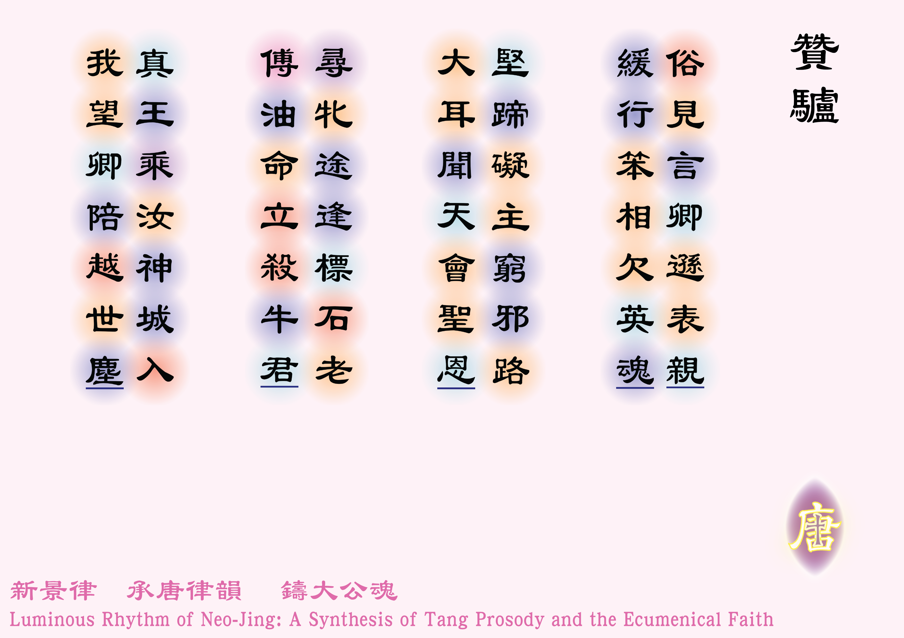

![[如果未顯示圖片，請確認 圖例_2-01.jpg 已放入同資料夾]](圖例_2-01.png)

俗見言卿遜表親 [1]* 卿：代名詞，「你」的意思，帶有親密感。
** 表親：指馬，馬在生物學上與驢為同科近親。，緩行笨相欠英魂。
堅蹄礙主窮邪路 [2]* 見〈戶籍紀：22〉；
** 窮：完成的意思。，大耳聞天會聖恩 [3]大耳：原文本為驢看見天主的使者（22:23），惟這裡轉換成驢的聽覺（大耳），因筆者在文學的角度上，驢的大耳更配合首聯「笨相」的視覺形象。。
尋牝途逢標石老 [4] * 牝：粵音貧憤切，雌獸的意思，這裡指撒烏耳替父親尋找母驢，見〈撒慕爾紀上：9:3-4〉
** 標石老：即先知撒慕爾，他曾在以色列人與培肋舍特人交戰後，豎立了一塊石命名為厄本厄則爾的石，意為「直到這時上主救助了我們」，見〈撒慕爾紀上：7:12〉。，傅油命立殺牛君 [5]殺牛君：即撒烏耳，他得悉雅貝士人想向阿孟人投降後，便宰殺了兩頭牛，並說：「凡不隨從撒烏耳和撒慕爾出征的，也必這樣對待他的牛！」，見〈撒慕爾紀：11:1-7〉。
真王乘汝神城入 [6]* 真王：即耶穌基督；
** 汝：「你」的意思；
*** 神城入：「入神城」的倒裝，指進入耶路撒冷。見〈瑪竇福音：21:1-7〉、〈瑪爾谷福音：11:1-7〉、〈路加福音：19:29-35〉及〈若望福音：12:14-15〉，另見〈匝加利亞書：9:9〉，我望卿陪越世塵！
體裁：七言粵律（仄起首句入韻）
韻部：現代粵語．en
創作日期：二零二六年三月二十日